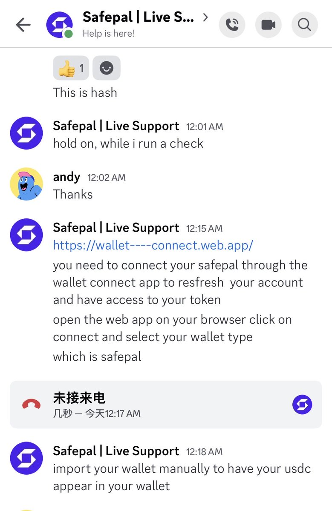
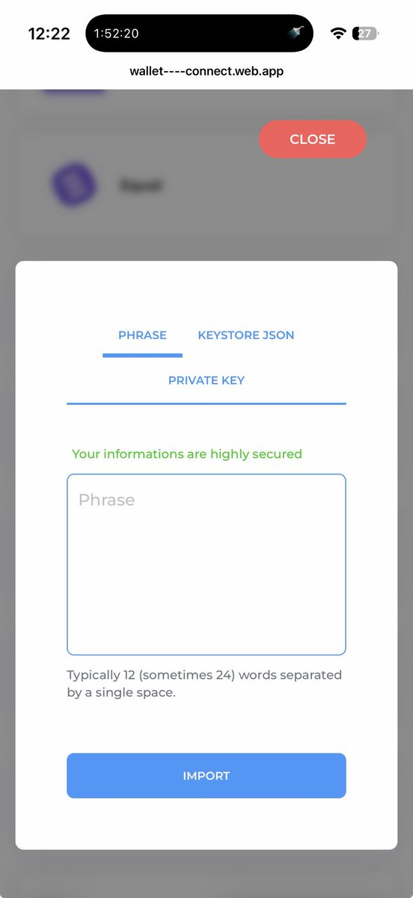

Aoi M
@aoim33
@allen_aguai @AppSaildotDEV @SafePalCN 这一看就是钓鱼网站啊


阿怪
@allen_aguai
现在safePal的申请也过了，基本和@AppSaildotDEV 说的一样。具体可以看底部链接
第一步认证ETH 我转了0.003， 秒到账safepal， 到了要升级打怪的激活卡片，现在从币安买了USDC ，转到safepal，没到账。
客服要求我在wallet connect写下助记词 这个会不会钓鱼
@SafePalCN 出来说两句看看 https://t.co/67ISn2qjnF https://t.co/McdmIAzp6O